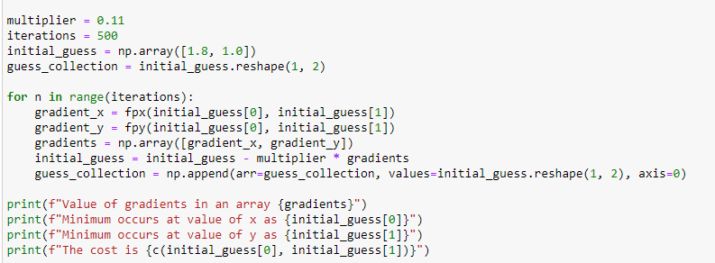

Scatter Points in a 3d Graphs?

First,we need to store the guesses, from initial to final guess in a numpy array. Normally, it is not possible because of the shape of our array but using the .reshape() method, it is possible.

After that, we will append the rest of the values from the loop.

Axis=0 means, we append the values in row, axis=1 is on column. keyword arguments such as arr= accepts the target array we wanted to be appended and values= accepts values to be added. The 2 arrays mush have a similar shape, in this case, they both have the shape of (1, 2), 1 rows and 2 columns.

Within our initial 3d figure. We added the .scatter() method acceptign the values of x, y and z. The guess collections contain each and every values from x and y, z is equivalent to the function with the parameters of x and y from guess_collection. with, that, we plotted our scatter plots.
Graphs!!